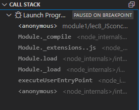
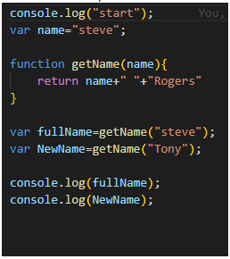
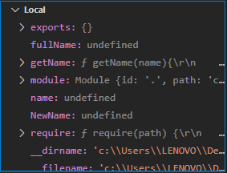
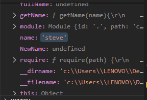
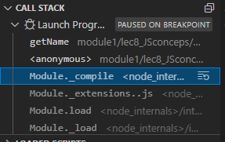
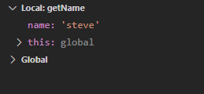
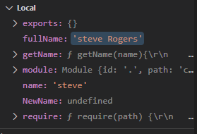

We know that any javascript code runs in a call stack or execution stack. Inside call stack everything happens in Global execution Context. Global execution context has two phases 1.Memory Allocation Phase 2.Code Execution phase.
 Lets take the above code snippet to understand the concept. In the memory Allocation Phase, Var name will be assigned to undefined, GetName will be assigned to the function body, fullName will be assigned to undefined, NewName will also be assigned to undefined.
In the Code Execution Phase, Name will be assigned to "steve" Now when ever there is function invocation, An Execution context is created which sits on top of global execution Context in the call stack.
 Now again two phases of execution context occurs in fullName i.e Memory Allocation Phase and code Execution Phase.
After two phases is done,due to the return statement ,the execution Context i.e fullName which sits on the top of GEC gets destroyed. Then the function gets returned to the location from where it was invoked.
Then similar things happens to getName. So, this is small explanation to undertand how a javascript code runs.